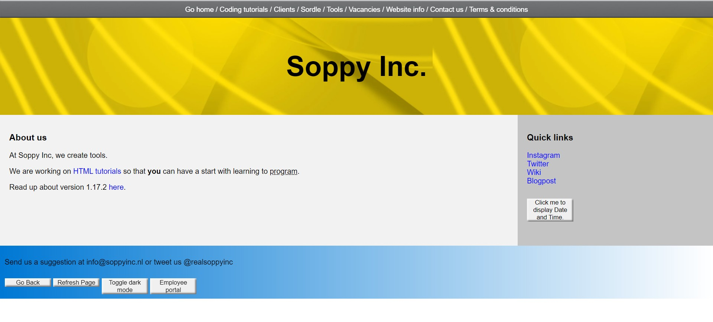

Version 1.18 changelog
- Total revamp of the CSS to bring a complete aero vibe to the website
- Changed button CSS
Original website:

Version 1.17.1 changelog
Below is the complete changelog for version 1.17 of soppyinc.nl
Navigation bar
Moved around some of the pages to make more sense.
Tools
Added 4 tools:
Audio player
Converters (LBS & KGS only so far)
School roster maker
Live clock
Styling
Fixed some slight styling issues.
That's it for 1.17.1.
Version 1.17 changelog
Below is the complete changelog for version 1.17 of soppyinc.nl
Navigation bar
Changed navigation bar to take up less space on mobile phones
Added a shaded hover element
Fixed navigation bar on a couple of pages where it didn't work
Employee portal
Added an employee portal.
Tools
Added 3 tools:
Spreadsheet maker (spreadsheeter)
Text editor
Up-to-date calendar
Styling
Fixed a couple of styling issues in the links dropdown and with the page layout
Pages
Added the following pages:
Tools.html
Vancancies.html
Portal/index.html
Spreadsheeter.html
Calendar.html
Texteditor.html
Merged the pages socials.html and contact.html into one.
Dark mode
Fixed dark mode and added it to all pages
@2024 Soppy Inc.